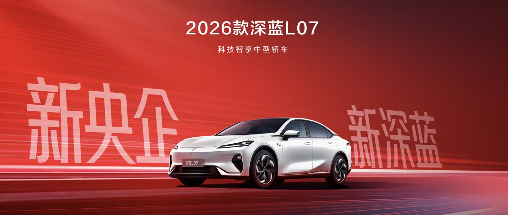

新闻 · 2026-11-23 18:00
新款深蓝 L07 车型将于 11 月 27 日广州车展亮相：采用 800V 高压平台、搭载豆包大模型
新款深蓝 L07 车型将于 11 月 27 日广州车展亮相，采用 800V 高压平台，全系标配激光雷达，搭载端到端开放域豆包大模型，支持车内外语音交互。车身尺寸为 4875×1890×1480mm，轴距 2900mm，配备无框车门、隐藏式门把手及 19 英寸轮毂，车尾有电动升降尾翼和掀背尾门。

来源与核验
单一信源报道，未交叉核实